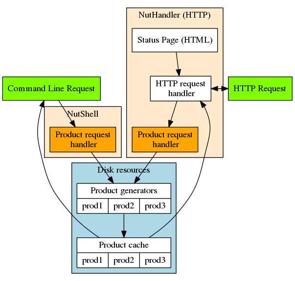

Overview¶
Product requests can be sent to NutShell in three different ways:
- Using the command line, especially for testing. For details, see Command-line usage
- Most flexibly as a library inside your Python program. For details, see NutShell API
- Providing access to others via a Web server. For details, see NutShell HTTP Server
These options are illustrated in the image below.
